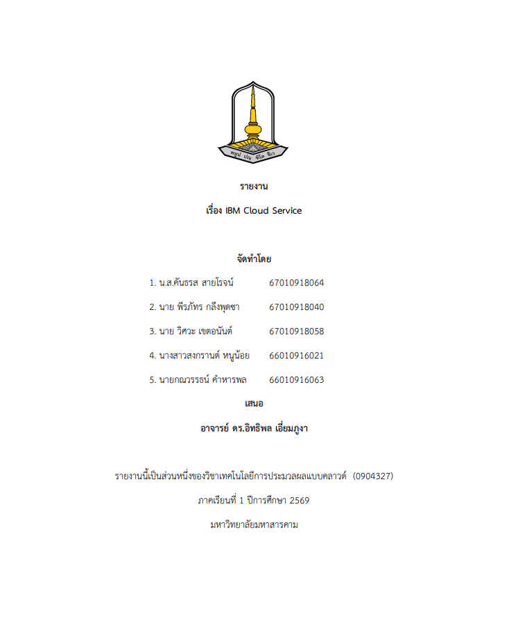

PROJECT IBM Cloud เว็บไซต์นี้จัดทำขึ้นมาเพื่อต้องการนำเสนอ IBM Cloud Service Web StaticHTMLCSSJavaScript  PDFเปิดรายงานโครงงานคลิกเพื่อดูไฟล์ PDF PDFPAPERคลิกเพื่อดูไฟล์ PDF OBJECTIVE วัตถุประสงค์ นำเสนอข้อมูลโครงงานอย่างเป็นระบบ สร้างเว็บไซต์ด้วย Web Static นำเว็บไซต์ขึ้น Cloud Hosting ออกแบบ UI ให้ใช้งานง่าย TECHNOLOGY เทคโนโลยีที่ใช้ HTML5โครงสร้างเว็บ CSS3ออกแบบ UI JavaScriptเพิ่ม Interaction Cloudเผยแพร่เว็บไซต์ 02เนื้อหา IBM Cloud Service 2.1Service (การบริการหลักๆ)รูปแบบบริการ as a Service ทั้ง 11 ประเภท 2.2Data Center Locationภูมิภาคและเมืองที่ตั้ง 2.3Pricing ModelLite, Pay-as-you-go และอื่นๆ 2.4Pro (ข้อดี) และ Con (ข้อเสีย)สรุปข้อดีและข้อเสีย 2.5Certification pathจากระดับเริ่มต้นถึงสูง 2.1Service (การบริการหลักๆ) บริการหลักของ IBM Cloud แบ่งตามรูปแบบ as a Service 2.1.1 IaaSInfrastructure as a Serviceเช่าโครงสร้างพื้นฐาน เช่น เครื่องเสมือนและเครื่องจริงVirtual Servers for VPC · Bare Metal 2.1.2 CaaSContainer as a Serviceรันและจัดการคอนเทนเนอร์ด้วย KubernetesIBM Cloud Kubernetes Service · Red Hat OpenShift 2.1.3 PaaSPlatform as a Serviceแพลตฟอร์มพัฒนาและรันแอปโดยไม่ต้องดูแลเซิร์ฟเวอร์Code Engine 2.1.4 FaaSFunction as a Serviceรันโค้ดเป็นฟังก์ชันตามเหตุการณ์ จ่ายตามการใช้จริงCode Engine Functions 2.1.5 DaaSDatabase as a Serviceฐานข้อมูลที่ IBM ดูแลให้ ทั้ง SQL และ NoSQLDb2 · Cloudant · Databases for PostgreSQL 2.1.6 Security & Identityความปลอดภัยและการยืนยันตัวตนจัดการสิทธิ์ผู้ใช้ กุญแจเข้ารหัส และ complianceIAM · Key Protect · Secrets Manager 2.1.7 Internet of ThingsIoT (เทียบกับ Azure IoT)Watson IoT Platform ถูกยกเลิกแล้ว ปัจจุบันเน้นชุด Maximo ส่วน Azure มี IoT HubMaximo Application Suite 2.1.8 STaaSStorage as a Serviceเก็บข้อมูลแบบอ็อบเจ็กต์ บล็อก และไฟล์Cloud Object Storage · Block · File 2.1.9 Big Data & Analyticsวิเคราะห์ข้อมูลขนาดใหญ่คลังข้อมูลและแพลตฟอร์มข้อมูลสำหรับงาน AIwatsonx.data · Analytics Engine 2.1.10 BCaaSBlockchain as a ServiceIBM Blockchain Platform ยุติการขายแล้ว จึงเป็นบริการเดิมHyperledger Fabric 2.1.11 LBaaSLoad Balancer as a Serviceกระจายทราฟฟิกไปหลายเซิร์ฟเวอร์เพื่อความเสถียรVPC Application / Network LB แหล่งเปรียบเทียบ: comparecloud.in · ตรวจชื่อบริการล่าสุดที่ IBM Cloud Catalog 2.2Data Center Location ศูนย์ข้อมูลแบบ Multizone Region (MZR) ภูมิภาคเมืองหลัก อเมริกาเหนือDallas · Washington DC · Toronto · Montreal อเมริกาใต้São Paulo ยุโรปLondon · Frankfurt · Madrid เอเชียแปซิฟิกTokyo · Osaka · Sydney ประเทศไทยยังไม่มี Region ของ IBM Cloud · ตรวจรายการล่าสุดที่ IBM Cloud Locations 2.3Pricing Model รูปแบบการคิดราคาของ IBM Cloud Liteใช้ฟรีแพ็กเกจฟรีของบางบริการ มีข้อจำกัดปริมาณ เหมาะกับการทดลอง Pay-as-you-goจ่ายตามใช้จริงคิดตามชั่วโมงหรือปริมาณ ไม่มีสัญญาผูกมัด Subscriptionสัญญารายเดือน/ปีจ่ายล่วงหน้าเพื่อรับส่วนลดสำหรับงานที่ใช้ต่อเนื่อง Reserved / Committedจองล่วงหน้าผูกสัญญาระยะยาวเพื่อต้นทุนต่อหน่วยที่ต่ำลง ประเมินค่าใช้จ่ายที่ Cost estimator · ราคาเปลี่ยนตามช่วงเวลา ควรระบุวันที่อ้างอิง 2.4Pro (ข้อดี) และ Con (ข้อเสีย) จุดแข็งและข้อจำกัดเมื่อเทียบกับ CSP รายใหญ่ ข้อดีแข็งแรงด้าน Hybrid cloud และ Red Hat OpenShiftเน้นความปลอดภัยและ compliance เหมาะกับธนาคาร/ภาครัฐมีเครื่องมือ AI และข้อมูลผ่าน watsonxมีตัวเลือก Bare Metal และการแยกทรัพยากรเฉพาะลูกค้ามีแพ็กเกจ Lite ให้ทดลองฟรี ข้อเสียส่วนแบ่งตลาดน้อยกว่า AWS, Azure, Google Cloudจำนวน Region น้อยกว่า และไม่มี Region ในไทยแหล่งเรียนรู้ภาษาไทยมีจำกัดบางบริการถูกยกเลิก/เปลี่ยนชื่อ ต้องตามข่าวสารระบบนิเวศบริการสำเร็จรูปน้อยกว่าเจ้าใหญ่ 2.5Certification path เส้นทางใบรับรองจากพื้นฐานสู่ผู้เชี่ยวชาญ IBM Cloud Foundationsระดับเริ่มต้นแนวคิดคลาวด์และบริการพื้นฐาน (IBM SkillsBuild) Cloud Developer / DevOpsระดับกลางพัฒนาและปล่อยแอป, Kubernetes, CI/CD Security Engineerระดับกลาง–สูงออกแบบและดูแลความปลอดภัยบน IBM Cloud Solution Architectระดับสูงออกแบบสถาปัตยกรรมคลาวด์ระดับองค์กร ชื่อใบรับรองเปลี่ยนตามปี ยืนยันที่ IBM Training & Certification 03รายวิชา ข้อมูลสำหรับการนำเสนอหน้าชั้นเรียน COURSEเทคโนโลยีการประมวลผลแบบคลาวด์รหัสวิชา: 0904327 ภาคการศึกษาภาคเรียนที่ 1 / 2569 หัวข้องานWeb Static + Cloud มหาวิทยาลัยมหาวิทยาลัยมหาสารคาม 04ผู้จัดทำ สมาชิกกลุ่มผู้พัฒนาเว็บไซต์ 01P1น.ส.คันธรส สายโรจน์รหัสนักศึกษา: 67010918064 02P2นาย พีรภัทร กลึงพุดชารหัสนักศึกษา: 67010918040 03P3นาย วิศวะ เขตอนันต์รหัสนักศึกษา: 67010918058 04P4นางสาวสงกรานต์ หนูน้อยรหัสนักศึกษา: 66010916021 05P5นายกณวรรธน์ คำหารพลรหัสนักศึกษา: 66010916063 05ผู้สอน อาจารย์ผู้สอนประจำรายวิชา ✦ INSTRUCTORอาจารย์ ดร.อิทธิพล เอี่ยมภูงาอาจารย์ประจำรายวิชา เทคโนโลยีการประมวลผลแบบคลาวด์ DEPLOYMENTReady for Cloudเว็บไซต์นี้เป็น Web Static สามารถอัปโหลดขึ้น AWS, Google Cloud, IBM Cloud หรือ Free Web Hosting ที่รองรับ Static Website ได้ STATUSREADY PROJECT REPORTรายงานโครงงาน ×
OBJECTIVE วัตถุประสงค์ นำเสนอข้อมูลโครงงานอย่างเป็นระบบ สร้างเว็บไซต์ด้วย Web Static นำเว็บไซต์ขึ้น Cloud Hosting ออกแบบ UI ให้ใช้งานง่าย
TECHNOLOGY เทคโนโลยีที่ใช้ HTML5โครงสร้างเว็บ CSS3ออกแบบ UI JavaScriptเพิ่ม Interaction Cloudเผยแพร่เว็บไซต์